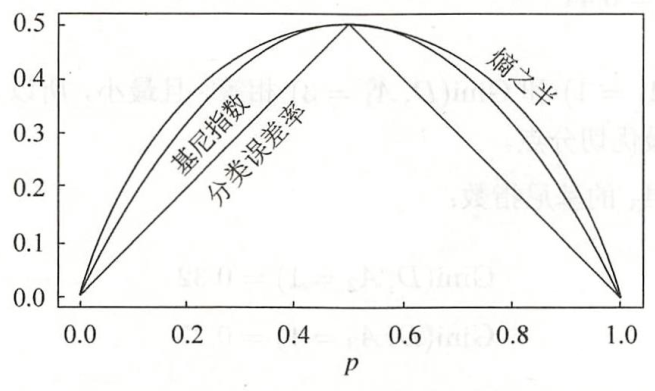

决策树¶
《统计学习方法》 - 李航 - 第二版 第五章，以及《Python数据手册》 - Jake VanderPlas 第五章的读书笔记，本文中的所有代码可在GitHub仓库中找到
理论¶
决策树(decision tree)是一种基本的分类与回归方法。本文主要讨论用于分类的决策树。在分类问题种，决策树可以认为是给定特征条件下类的条件概率分布。所有给定的特征条件将特征空间划分为互不相交的单元。决策树的一条路径对应于划分种的一个单元。各叶节点(单元)上的条件概率往往偏向某一个类，决策树分类时将该单元的实例强行分到条件概率大的那一类去。
决策树的主要优点是模型具有可读性，分类速度快。通常包括3个步骤：
- 特征选择
- 决策树的生成
- 决策树的修剪
常见的决策树算法有：
- ID3算法
- C4.5算法
- CART算法
三种算法的特点如下：
| 算法 | 支持模型 | 树结构 | 特征选择 | 连续值处理 | 缺失值处理 | 剪枝 |
|---|---|---|---|---|---|---|
| ID3 | 分类 | 多叉树 | 信息增益 | 不支持 | 不支持 | 不支持 |
| C4.5 | 分类 | 多叉树 | 信息增益比 | 支持 | 支持 | 支持 |
| CART | 分类，回归 | 二叉树 | 基尼系数,均方差 | 支持 | 支持 | 支持 |
表格来自文章
特征选择¶
信息增益¶
在信息论与概率统计中，熵(entropy)是表示随机变量不确定性的度量。随机变量 \(X\) 的熵定义为：
其中， \(p_i\) 是 \(X=x_i\) 的概率。熵越大，随机变量的不确定性就越大。例如，当随机变量只取“1,0”两个值（伯努利分布）时，熵 \(H(p)\) 随概率 \(p\) 变化的曲线如下图所示：

当概率 \(p\) 平均分布（等于0.5）时，熵最大。换句话说，当“1,0”出现的概率相等时，不确定性最大。
条件熵 \(H(Y|X)\) 表示在已知随机变量 \(X\) 的条件下随机变量 \(Y\) 的不确定性。其定义为 \(X\) 给定条件下 \(Y\) 的条件概率分布的熵对 \(X\) 的数学期望：
其中， \(p_i = P(X=x_i), i = 1,2,...,n\) 。
定义（信息增益） 特征 \(A\) 对训练数据集 \(D\) 的信息增益 \(g(D, A)\)，定义为集合 \(D\) 的经验熵 \(H(D)\) 与特征 \(A\) 给定条件下 \(D\) 的经验条件熵 \(H(D, A)\) 之差，即
信息增益表示由于特征 \(A\) 而使得对数据集 \(D\) 的分类的不确定性减少的程度。信息增益大的特征具有更强的分类能力。
根据信息增益准则的特征选择方法是：对训练数据(或子集) \(D\)，计算其每个特征的信息增益，并比较它们的大小，选择信息增益最大的特征。
例1 假设我们想通过如下的“贷款申请样本数据表”，学习一个贷款申请的决策树，用以对未来的贷款申请进行分类。如何用信息增益选择特征来划分特征空间？
| ID | 年龄 | 有工作 | 有自己的房子 | 信贷情况 | 类别 |
|---|---|---|---|---|---|
| 1 | 青年 | 否 | 否 | 一般 | 否 |
| 2 | 青年 | 否 | 否 | 好 | 否 |
| 3 | 青年 | 是 | 否 | 好 | 是 |
| 4 | 青年 | 是 | 是 | 一般 | 是 |
| 5 | 青年 | 否 | 否 | 一般 | 否 |
| 6 | 中年 | 否 | 否 | 一般 | 否 |
| 7 | 中年 | 否 | 否 | 好 | 否 |
| 8 | 中年 | 是 | 是 | 好 | 是 |
| 9 | 中年 | 否 | 是 | 非常好 | 是 |
| 10 | 中年 | 否 | 是 | 非常好 | 是 |
| 11 | 老年 | 否 | 是 | 非常好 | 是 |
| 12 | 老年 | 否 | 是 | 好 | 是 |
| 13 | 老年 | 是 | 否 | 好 | 是 |
| 14 | 老年 | 是 | 否 | 非常好 | 是 |
| 15 | 老年 | 否 | 否 | 一般 | 否 |
解 首先计算经验熵 \(H(D)\) ：
然后计算各特征对数据集 \(D\) 的信息增益。分别以 \(A_1, A_2, A_3, A_4\) 表示年龄、有工作、有自己的房子和信贷情况4个特征。分别计算每个特征在数据集 \(D\) 下的信息增益：
按照同样的方法，计算出 \(g(D, A_2)=0.324, g(D, A_3)=0.420, g(D, A_4)=0.363\)。由于特征 \(A_3\) (有自己的房子)的信息增益值最大，所以选择特征 \(A_3\) 作为第一层的最优特征。
特征 \(A_3\) 将数据集划分为两组 \(D1,D2\)。如果 \(D1,D2\) 还需要根据特征进行划分(参见后面章节“决策树的生成”)，应再次分别计算 \(D1,D2\) 数据集下 \(A_1,A_2,A_4\) 的信息增益，以选取下一层的最优特征。
信息增益比¶
以信息增益作为划分训练数据集的特征，存在偏向于选择取值较多的特征的问题。使用信息增益比(information gain ratio)可以对这一问题进行校正。
定义(信息增益比) 特征 \(A\) 对训练数据集 \(D\) 的信息增益比 \(g_R(D, A)\) 定义为其信息增益 \(g(D, A)\) 与训练数据集 \(D\) 关于特征 \(A\) 的值的熵 \(H_A(D)\) 之比，即
其中， \(H_A(D) = - \sum_{i=1}^{n} \frac{|D_i|}{|D|} \log_2 \frac{|D_i|}{|D|}\)，特征 \(A\) 将 \(D\) 划分为 \(n\) 个子集 \(D_1, D_2, ..., D_n\)， \(|D_i|\) 为 \(D_i\) 的样本个数。
基尼指数¶
信息增益和信息增益比的计算会涉及大量的对数运算。使用基尼指数可以简化计算。基尼指数代表了模型的不纯度，基尼指数越小，则不纯度越低，特征越好。
定义（基尼指数） 分类问题中，假设有 \(K\) 个类，样本点属于第 \(k\) 类的概率为 \(p_k\)，则概率分布的基尼指数定义为：
在特征 \(A\) 的条件下，集合 \(D\) 的基尼指数定义为
基尼指数 \(\operatorname{Gini}(D)\) 表示集合 \(D\) 的不确定性，基尼指数 \(\operatorname{Gini}(D, A)\) 表示 \(A=a\) 分割后集合 \(D\) 的不确定性。基尼指数数值越大，样本集合的不确定性也就越大，这一点与熵相似。
下图显示了二分类问题中基尼指数 \(\operatorname{Gini}(p)\)、熵(单位比特)之半 \(H(p)/2\) 和分类误差率的关系。横坐标表示概率 \(p\)，纵坐标表示损失。可以看出基尼指数和熵之半的曲线很接近，都可以近似地代表分类误差率。

决策树的生成¶
决策树的三种生成算法分别采用了三种不同的方法选择最优化特征。其中，ID3算法采用信息增益、C4.5算法采用信息增益比、CART算法采用基尼指数。但是三者的对决策树的生成算法是类似的，都是从根开始，在各个结点上应用信息增益准则选择特征，递归地构建决策树，其过程大致如下：
flowchart TB
A[训练数据集D] --> B{{判断是否为单结点}}
B --否,选择最优特征--> C[划分数据集为D1...Dn] --对每个子划分递归--> A
B --是--> D(结束此次递归)ID3算法¶
例2 对例1中的“贷款申请样本数据表”，利用ID3算法建立决策树。
解 由例1的结果可知，特征 \(A_3\) 的信息增益值最大，所以先选择特征 \(A_3\) 作为根结点的特征。它将训练数据集 \(D\) 划分为两个子集 \(D_1\) 和 \(D_2\)。其中， \(D_1\) 所有的样本点的分类都为“是”，所以它成为一个叶节点，结点的类标记为“是”，不需要为其继续递归。
对 \(D_2\) 则需从特征 \(A_1\) (年龄)， \(A_2\) (有工作)和 \(A_4\) (信贷情况)中选择新的特征。计算各个特征的信息增益：
选择信息增益最大的特征 \(A_2\) (有工作)作为 \(D_2\) 结点的特征。\(A_2\) 有两个可能取值，将 \(D_2\) 划分为两组数据。一个对应“是”（有工作），包含3个样本，它们属于同一类(“是”)，因此是叶结点，结束递归。另一个对应“否”（无工作），包含6个样本，也属于同一类(“否”)，结束递归。最终，我们得到如下的决策树，该决策树只用了两个特征。

CART算法¶
例3 对例1中的“贷款申请样本数据表”，利用CART算法建立决策树。
解 首先计算各特征的基尼指数，选择最优特征以及其最优切分点(二分)。分别以 \(A_1,A_2,A_3,A_4\) 表示年龄、有工作、有自己的房子和信贷情况4个特征，并以1，2，3表示年龄的值为青年、中年和老年，以1，2表示有工作和有自己的房子值为是和否，以1，2，3表示信贷情况的值为非常好、好和一般。
求特征 \(A_1\) 的基尼指数：
由于 \(\operatorname{Gini}(D,A_1=1)\) 和 \(\operatorname{Gini}(D,A_1=3)\) 相等，且最小，所以两个点都可以选作 \(A_1\) 的最优切分点。
用同样的方法，求 \(A_2\) 和 \(A_3\) 的基尼指数，由于它们只能取两种值，所以只有一个切分点：
继续求特征 \(A_4\) 的基尼指数：
\(\operatorname{Gini}(D,A_4=3)\) 最小，选择 \(A_4=3\) 为最优切分点。
在所有特征中， \(\operatorname{Gini}(D,A_3=1)\) 最小，所以选择特征 \(A_3\) 为最优特征， \(A_3=1\) 为最优切分点。于是根结点生成两个子结点，一个是叶结点(所有数据类相同)。另一个结点继续使用以上方法在 \(A_1,A_2,A_4\) 中选择最优特征及其最优切分点，结果是 \(A_2=1\)。依此计算得知，所得结点都是叶结点。
对于本问题，按照CART算法所生成的决策树与按照ID3算法所生成的决策树完全一致。
实验¶
决策树分类器的算法相对清晰，这里提供两个例子：
-
基于ID3算法实现决策树分类器
-
利用
sklearn.tree中的DecisionTreeClassifier直接对数据进行决策树分类